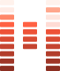
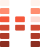
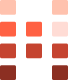

Style guide
The rules for anything written for HarmonicFitness: these docs, the web app, the README, error messages and the coach's lines. It's mostly about words, because the product is a voice in someone's ear.
Plain, short and specific. Write for someone who has just tabbed back in and wants to catch up.
Lead with what happened or what to do. The reason comes second, and the detail last.
“Sends the script to the voice service”, not “dispatches the payload”. If a word needs a glossary, use a simpler one or add it to the terms below.
“Eight seconds”, “five percent”, “twenty-five minutes”. Never “a while”, “a bit” or “most”.
Once a thing has a name, use only that name. A brief is never also a “plan sheet”. The terms table is the list.
Drop “real”, “actual”, “genuine”, “honest”, “simply” and “just”, and don't announce what you're about to say.
Every rule says what it protects, in one clause, with the test that proved it where there was one.
me/.env.Who does what, stated flatly.knowledge/script.md covers how a script
should sound and knowledge/tts-rules.md what a voice can read: digits, symbols and ellipses become
words or go. Each coach's own voice is in its persona.md.The words the app, the docs and the code share. Use these and no synonyms.
| Term | Means | Not |
|---|---|---|
| listener | The person the workout is for. They hear it; they don't watch it. | user, client, athlete |
| coach | A persona with a name, a way of talking and a voice. | voice, bot, avatar |
| local coach | One of the ten stock coaches, spoken on this computer by Pocket TTS. | offline voice |
| web coach | A coach that speaks through a voice service, with the listener's key. | cloud voice, API voice |
| check-in | The few questions asked before a workout. | survey, intake |
| brief | The day's ingredients: who they are, today's limits, the safe menu, the doses. | plan, spec |
| menu | Every movement allowed today. The build checks the draft against it. | whitelist, allow list |
| limit | An injury rule for one area: off-limits or delicate. | restriction, flag |
| draft | The script being written, with its @@ segments and markers. | template, source |
| skeleton | A draft with the clock and no words yet: segments, seconds, counts and holds. | outline |
| segment | One timed stretch of the script: @@ 45 | Rest after set two. | block, chunk |
| rest | A segment between sets. It usually carries a story. | break |
| story | The listener's content in a rest, wrapped in [story] tags. | filler, fluff |
| lint | The build's check of a draft, before anything is spoken. | validate |
| build | The one command that checks, renders and delivers a draft. | compile |
| render | Turning the draft into audio in the coach's voice. | synthesize, generate |
| deliver | Copying the MP3 to the listener's delivery folder. | export, publish |
| stock | Stories researched ahead of time, kept in research/reserve/. | pantry, cache |
| thread | Something a session leaves open for a later one: a serial, a quiz, a promise. | cliffhanger |
| engine | The public repo: tools/, knowledge/, the skills and tests. | backend, core |
Five brand colours, from assets/brand/README.md. Ember is the meter's gradient. Change
them there and in make.py, never by hand.
#FF5A3CThe brand colour. Accents, the active item, the request's fixed words.#8C2F22The foot of the meter.#FFC2AEThe top of the meter.#111215Dark backgrounds; words on light.#EDEAE0Words on dark.From web/client/src/theme.css. The app is dark: paper underneath, sheets on top, and
three tones of cream for text.
#111215The page.#1A1B20Cards and panels.#22232AA card inside a card; code.#34353BBorders and dividers.#EDEAE0Headings and main text.#C2C1BABody text in cards.#9A9993Labels and captions.#9DBEDDDusk blue: coach samples, the current coach.#E3907DSomething stopped or refused.Each folder has one colour, the same on every docs page. Always put the folder's name beside its colour, so the colour is never the only cue.
Two faces, both free on Google Fonts. Headings are tall and loud; body text is narrow and calm.
./harmonicfitness build "<draft>" "<name>" --lint-onlyAn H drawn as a stereo level meter: two channels and a middle bar, in Ember. Use the form that fits the
size. The files and their rules are in assets/brand/.

About 60 px and up. Ten segments a channel.

24 to 60 px. Six segments.

Under 24 px. Four segments.
The main logo. Use -reversed on dark.
make.py instead.Every page in docs/ links docs.css and the two Google Fonts, and starts from
the same top bar. Keep each page self-contained: no scripts and no build step.
.table-wrap..card, .grid: panels that wrap..steps: a numbered list in coral..chip + .l-me (and so on): a folder, in its colour. Dashed means written..note: a callout with a coral edge.The day's ingredients and the safe menu.
A top edge in the folder's colour, its path in monospace, then one heading and a line or two.
docs/ is part of the
public engine. No listener's name, health, location, log lines or drafts, even as examples: the pre-push hook and CI
refuse them. Make up example names and facts, and keep them obviously generic.